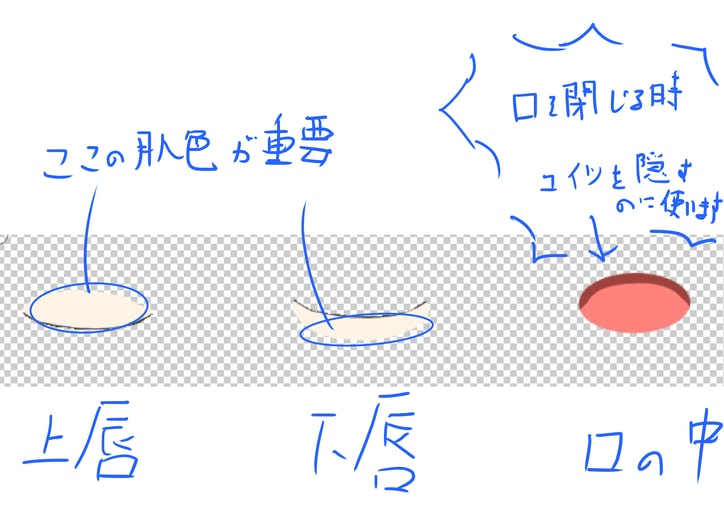

こんにちは！マルチ班二回生レイヤです！ 津田沼祭にて FaceRig と Live2D を使って制作した Vtuber モデル、覚えていますでしょうか！津田沼祭のブースを見に来てくださった方々からの反応も良かったので、文祭でこの Vtuber 企画を続けていって欲しい！というわけでこの機会に Live2D を使った Vtuber の作り方を皆さんに紹介したいと思います！ ※Live2D についてのすごく長い記事になると思います。興味ない人は読むことをお勧めしません。
株式会社 Live2D さんが開発した 2D イラストを立体的に自由自在に動かすことができるソフトです。トッテモスゴイ。 3D モデルを使わず、何枚も絵を描くこともなくオリキャラが自由に動き回ります。しかも Live2D で制作したモデルは FaceRig に持ち込むことができるだけでなく、ゲームにも対応しています。ノベルゲームを作りたい人は Live2D の運用を考えてみてはいかがでしょうか！
皆さんバ美肉という言葉をご存知かと思われます。Live2D を使うことで現実ではなかなか覆すことのできない性別の壁をいとも簡単に超えることができるのです。戻りたければすぐに性別を戻せますし、これってすごくないですか？自分の好きなものを詰め込んだ最高のキャラクターに自分がなれるんですよ！とっても素晴らしいですよね！実際女の子になれて本当に楽しかったです。他にも、Live2D 上でアニメーションの設定が必要になりますが、先ほど言いました通りゲームに対応させることができるため、ソフトメディア研究会の活動の幅がまた広がるのではないかと思います！（Live2D の最新版は対応していない恐れがあります。）
早速ですが、PSDファイル書き出しまでのどこかで間違えているとうまくいきません。最初のこの段階が一番重要です。気を付けていきましょう。
気を付けるのは
Live2Dの立体的に自由自在に動くという点で、普通は隠れている部分もキャラが動くことによって見えるようになる部分が出てきます。ですので、隠れている部分もちゃんと書き込んでおくことが大事です。
大体上の画像のような要領です。
また、レイヤーに描かれているものが Live2D
上でパーツとして認識されるため、イラストは細かくレイヤー分けしたほうが動かしやすいです。髪なら前髪、もみ上げ、後ろ髪、頭頂部といった感じに細かくパーツ分けして描きましょう。影やハイライトなどを塗りたい場合はクリッピング機能を使っても後々統合すれば大丈夫です。
下の画像は目をまつげ、目玉、白目の三つのレイヤーに分けて描いています。
それで、厄介なのが口のパーツで、上唇、下唇、口の中、歯（今回僕は書いてませんが）の四つに分かれるのですが、Live2D
上で、閉じた口、ムッとした口、にっこりした口、「あ」の形の口、「え」の形の口など、大きく変形する設定を複数させることになるので口のパーツがしっかりしていないとおかしなことになります。最初から空いている口を描くと後々楽かと思われます。僕は閉じた口で描いて動かしたのでとっっっても大変でした。
まだ口に関する注意点がありまして、上唇の上と、下唇の下に肌色を他パーツに干渉しないくらいに置いておいてください。

この肌色を使って Live2D
上で口の中の出てきちゃいけない部分を隠します。ごり押します。意外と力業です。
それでも最初は閉じた口を描くぜ！っていう挑戦的な人はペイントソフト上では口の中はしっかり描いておきつつ非表示にしておくと邪魔にならないと思います。表示、非表示は
Live2D 上でも変えられるので大丈夫です。
そろそろ書き出しまであと少しです。
レイヤーを統合しましょう。ここでいくつか注意点があります。クリッピングして描いた影やハイライトは一つのレイヤーにそれぞれまとめてください。一つのパーツに一つのレイヤーです。不透明度などは１００％、レイヤーは通常レイヤーにしてください。加算レイヤーなどはご法度です。同じ名前のレイヤーは存在しないようにしてください。背景は透明にしてください。これらのことに注意して
PSD
ファイルに書き出しして、最初で一番重要な作業は終了です。
Live2D Editter を開くとまずいろいろ項目が出てきますが、「FREE 版として起動」で大丈夫です。機能が限定されますが問題なく制作できます。
左上の「ファイル」から「ファイルを開く」で先ほど書き出した PSD ファイルを開きます。開けましたら右側にキャラが出てくるとおもいますが、この時点ではまだ何も動かせません。テンプレートを適用させましょう。 左上の「ファイル」から「テンプレートを適用」の欄があるのでクリックしてください。テンプレート素材集が出てきます。 Epsilon(FaceRig)という名前の女の子がぐりぐり動いているテンプレートがあると思うのでそれを選択してください。
選択すると、点滅するテンプレートと自分のキャラ、いろんなパラメータが出てくると思います。 テンプレートは拡大・縮小ができるので自分のキャラと目やあご、前髪などの位置をなるべく一致させてください。ここはざっくりで構いません。 できましたら上の方の「テンプレート適用」をクリックしてください。これである程度 Live2D 側が自分のキャラの目や前髪などのパーツを認識してくれます。まぁ誤認識がひどくて怖いものを見せられますが…。 今度は誤認識しているパーツを正しく紐づけしていきます。動かれるとやりづらいので左上の「再生」をクリックして動きを止めます。
カーソルを合わせてクリックすると「選択要素を対応付け」の欄とクリックした位置にあるパーツが出てくるので両方で対応させたいパーツを選んで正しく対応付けしていきます。
ちゃんとできましたら、パラメータパレットをクリックするとキャラを自由に動かせるのでパラメータをぐりぐり動かして確認してみてください。
目を閉じさせると間違いなくまつげを目玉が突き抜けるかと思いますのでここではスルーしていきましょう。
両方とも同じパーツが動いていること確認しましたらＯＫを押してください。
画面が戻り、自分のキャラの周りにうすい灰色の三角形が浮かんでいれば大丈夫です。
ここから先ほど動かしておかしくなっていた部分を直していきます。主に目とか口ですね。
まずはまつげから形を整えていきましょう。まつげなどパーツをクリックすると白い点や黒い線が現れるのですが、
これはメッシュといい、テンプレートを適用した際に自動で作られたものです。といっても使いにくいので一旦消してしましましょう。
パーツをダブルクリックするとメッシュを編集できます。
ツールパレットから消しゴムを選択して一旦全部消します。その後真ん中のペンツールで白い点を打ち込んでいきましょう。
眉の内側と外側をそれぞれ一周するように打ち込んでいってください。点と点の間隔はそれなりに開けてください。
詰めすぎると後々面倒です。はねたまつげの内側は打ち込まなくて大丈夫です。
打ち込み終わりましたらチェックマークをクリックして編集を終えましょう。
パラメータの欄の「左目 開閉」（もしくは「右目 開閉」）を
0.0 にします。目をつむっている状態だと Live2D
は認識しているので、まつげのメッシュを動かして目をつむっているときの形にまつげを変形させていきましょう。
ここさえ乗り切ればまぁ後は楽です。
まつげの形が整いましたら白目を編集します。メッシュを先ほどのまつげのように編集しましょう。
白目はざっくりやってしまって大丈夫です。「左目開閉」（もしくは「右目 開閉」）のパラメータが 0.0になっていることを確認しましたら、
白目のメッシュを動かして、閉じているまつげの中にぶち込んでいきましょう。力業で見えないようにします。ごり押しましょう。
一か所に固めるのではなくまつげの中全体に広げるようにしてください。
そして、白目を選択したまま「インスペクタ」にある IDをコピーしてください。ArtMesh○○ と書かれているものです。
次は目玉を選択し、「インスペクタ」内にあるクリッピングの欄に先ほどのIDをペーストしてください。
そうすると、目玉がまつげを突き破る大惨事は収まります。反対側の目も同じように設定してください。
目が終わりましたら口をいじっていきましょう。まつげの時と同じようにメッシュを編集して閉じている時の口を作っていきましょう。
「口開閉」のパラメータが 0.0になっているときに口が閉じていると認識するので、
開いた口で描いた人はパラメータを0.0にしてメッシュを動かして閉じた口に変形させてください。
口を閉じていれば当然口の中は見えてはいけないので、上唇、下唇のレイヤーに描いた肌色の部分で隠しましょう！ごり押しましょう！
パラメータの角度 X、角度 Y、角度 Z
の三つを動かすと顔が歪むと思いますのでメッシュを動かして直していってください。
同じように他のパラメータをいじくりまわしつつおかしな部分を発見しましたら適宜対応していただきまして…。
右下の三角形をクリックするとパラメータをランダムに動かしてくれるのでおかしな部分があるとすぐにわかるので便利です。
メッシュの編集を終え、おかしな部分を直し終えましたら次は
FaceRig に持ち込むために moc
ファイルへ書き出ししましょう。
まず左上の「モデリング」の「テクスチャ」から「テクスチャアトラス編集」をクリックしてください。FREE
版では px に制限がかかりますが、十分な px
数は確保されているのでそのまま設定変更せずに OK
していきましょう。
テクスチャアトラスを作成できましたら準備 OK
です。左上の「ファイル」の「組み込み用ファイル書き出し」から「moc
ファイル書き出し（2.1
用）」をクリックしてください。色々ポップアップが出てきますが何もいじらず
OK で大丈夫です。
するとこの三つが書き出されます。ですが、これだけでは足りません。 メモ帳を開いて、
set*friendly_name 〔アバター名〕 'Live2D 〔アバター名〕'
set_avatar_skin_description 〔アバター名〕 default txt_descLive2dAvatar1
この二行を打ちこんでください。僕の場合〔アバター名〕の部分は
Reiya Vtuber にしていたはずです。まぁHN Vtuberと書いて下されば展示の際分かりやすくなるかなと思います。
このメモ帳のファイルは
cc_names〔アバター名〕.cfg
という名前で保存してください。
四つのファイルがそろいましたら、一つのフォルダにまとめます。まとめるフォルダの名前は先ほど
〔アバター名〕
の欄に打ち込んだものにして下さい。 これで後は steam
に放り込むだけです！
\Steam\SteamApps\common\FaceRig\Mod\VP\PC_Common\Objects上記のエクスプローラの場所に放り込みましょう！ FaceRig を起動して動作確認をしてください！ちゃんと動作していれば作業終了です！お疲れさまでした！Vtuber デビューおめでとうございます！
これにてぼくの Live2D
の講座は終了です。ぜひ皆さんに Vtuber
モデルを作っていただきたくこの記事の内容にしました。文字数半端なくてヤバいです。最多では？？？
津田沼祭でこの企画に参加して思いました。すごくいい企画です。自分の好きのものを詰め込んだお気に入りのキャラが、自由自在に動き回る。すっっごく魅力的です。
今回津田沼祭で僕とおだくんの動き回るキャラをみて、そう感じた人はいると思います。そういう人たちなら、今回の記事を読んで次の文祭でこの企画を続けていってくれると思っています。続けていって欲しいです。
実際何か新しいことを始めてみるということはとても大切なことです。技術力が身に付きますし、何よりとても楽しいです。うまくできるか不安な人もいるかもしれませんが、失敗しても周りの人に助けを求めれば必ず助けてくれます。ソフトメディア研究会はそういう場所です。
ソフトメディア研究会では、すべての人に好きなものを自由にすることが思いっきり許されています！
皆さん折角こんなにいい環境の場所にいるんです。今回紹介した
Vtuber
企画でなくてもかまいません。何か新しいことを始めてみてはいかがでしょうか。
これにて約 5000 文字にわたる僕の講座を終えたいと思います。お疲れさまでした！